How to use this lesson
§0 · From last time. Sherpa is static — it does what its prompt and tools allow. Self-improving agents learn from their own traces.
Business Scenario
Daniel: "Sherpa makes the same mistake patterns repeatedly. Can it learn from its own corrected errors?"
Bridge to Topic
Reflection (4.3) stores lessons in a prompt. Self-improvement trains the model on its own traces. Two flavours: prompt-level (cheap), weights-level (expensive).
Mind Map

Mermaid source
mindmap
root((Self-Improving))
Prompt-level
Lesson accumulation
Example mining
Cheap
Weights-level
RLAIF
DPO on traces
Expensive
Risk
Catastrophic forget
Reward hacking
Drift
Elaboration
4.1 Prompt-level (production-feasible today)
Mine agent traces:
- Successful traces → high-quality few-shot examples (auto-promote to system prompt).
- Failed-then-corrected traces → cautionary lessons.
Refresh prompt examples quarterly from the trace database. Low risk; modest gain.
4.2 Weights-level (research-frontier)
RLAIF (RL from AI Feedback): use the agent's traces as training data. Reward = critic's score. Update the model's weights.
Cost: hundreds of thousands of dollars per training cycle. Risk: catastrophic forgetting; reward hacking; drift from original capabilities.
Realistic today only for very-high-volume agents where 1% accuracy improvement justifies the cost.
4.3 DPO on agent rollouts
Lighter-weight than full RL. Use trace pairs (good-trace, bad-trace) for the same task. Direct preference optimisation on these pairs.
Cost: $10K-$50K per cycle for a Sonnet-class model. Risk: same as RLAIF, smaller magnitude.
4.4 Continual learning vs episodic improvement
Episodic: quarterly retraining batch. Continual: online updates from every trace.
Continual is harder (concept drift, reward hacking) and rarely justified for agents — episodic almost always suffices.
Problem Statement
Decide whether self-improvement is justified for one of the three case-study orgs. Estimate cost vs benefit.
Solution Walkthrough
- HSBC Sherpa: prompt-level only. Volume + stakes don't justify weights-level cost.
- Helix hypothesis-gen: prompt-level + DPO on Maya's accept/reject pairs. Worth it for the long-tail quality.
- Acme support: prompt-level. Episodic retraining of the cheap-model (Haiku) tier from production traces.
Mathematical Foundation
7.1 RLAIF break-even
Cost: $C$. Lifetime value: $V \cdot \Delta\text{accuracy}$ over remaining deployment. Worth it iff $V \cdot \Delta\text{accuracy} > C$.
For Sherpa: $V \approx $3.4M/yr$ × ~5-year deployment = $17M. 1% accuracy gain = $170K. RLAIF cost ~$200K. Borderline; deferred.
Technical Deep-Dive
8.1 Reward design for trace-RL
Reward = function of (correctness, cost, calibration). Wrong reward = reward hacking (agent finds a way to maximise reward without actually being better).
8.2 Holdout evals
When self-improving: hold out an eval set that the training process never sees. Use it to detect overfitting to the training distribution.
8.3 The "rollback" plan
Self-improvement can degrade performance unexpectedly. Always able to revert to a previous model + prompt. Tag every deployment with the version that produced it.
8.4 The full prompt-level improvement pipeline
Production-feasible today, low risk:
async function refreshPromptFromTraces() {
// Step 1: pull recent traces (last 30 days)
const traces = await traceStore.recent({ days: 30 });
// Step 2: classify each: success / failure / borderline
const labelled = await Promise.all(traces.map(async (t) => ({
trace: t,
label: await classifyOutcome(t), // ground truth from human review
})));
// Step 3: mine cautionary lessons from failures
const failureLessons: Lesson[] = [];
for (const t of labelled.filter(x => x.label === "failure")) {
const lesson = await llm.extractLesson({
trace: t.trace,
prompt: "What single rule, if shown to the agent on similar future cases, would prevent this error?",
});
failureLessons.push({
text: lesson.text,
triggers: extractTriggers(t.trace),
source_case_id: t.trace.id,
});
}
// Step 4: mine examples from successes
const examples = await Promise.all(
labelled
.filter(x => x.label === "success")
.slice(0, 50)
.map(async (t) => ({
trace: t.trace,
score: await scoreExample(t.trace, { dimensions: ["clarity", "diversity"] }),
}))
);
// Top 5 by score, diverse coverage
const bestExamples = diversify(examples.sort((a, b) => b.score - a.score), 5);
// Step 5: propose new prompt
const proposedPrompt = buildPrompt({
base: BASE_PROMPT,
examples: bestExamples,
lessons: failureLessons.filter(l => l.source_case_id),
});
// Step 6: A/B test the proposed prompt
const abTest = await runABTest({
control: currentPrompt,
treatment: proposedPrompt,
eval_set: regressionEvalSet,
cases_per_arm: 100,
});
// Step 7: promote only if treatment wins on accuracy without
// significant cost or latency regression
if (abTest.accuracy_delta > 0 && abTest.cost_delta < 1.10) {
await promotePrompt(proposedPrompt);
return { success: true, accuracyGain: abTest.accuracy_delta };
}
return { success: false, reason: "no_improvement" };
}
Run quarterly. Catches systematic regressions; surfaces lessons; refreshes the prompt without manual labour.
8.5 DPO on agent rollouts: when it's worth it
DPO (Direct Preference Optimization) trades pretraining-quality preference data for inference-time preference data.
Cost-benefit (Sherpa case):
- Trace pairs to collect: ~5,000 (one good, one corrected, per case)
- Annotation cost: free (we already have human corrections from Aisha's team)
- Training cost: ~$15K (Sonnet-class fine-tune via Anthropic's training API or self-hosted)
- Expected accuracy gain: 2-4pp (literature estimate)
- Annual value of 3pp accuracy gain: ~$30K (avoided wrong classifications)
Verdict: borderline. Worth piloting; not slam-dunk.
When DPO clearly wins:
- High volume (>10K tasks/day) with measurable accuracy gradient
- Substantial preference data (>10K pairs)
- Tasks where prompt engineering has saturated
When it doesn't:
- Low volume (gains don't amortise)
- No reliable preference signal (everything's already "correct")
- Tasks where capability gap matters more than calibration (use a bigger model instead)
8.6 The catastrophic-forgetting protection scheme
For any weights-level update:
Pre-training-step:
1. Snapshot current weights (versioned).
2. Snapshot regression-eval baseline performance per slice.
Post-training-step:
3. Re-run regression eval per slice.
4. For each slice: did accuracy drop >2pp? If yes, training over-fit a different slice; reject.
5. Run "old test" — a holdout from the previous training round; ensures we haven't forgotten what we already knew.
6. If all checks pass: promote new weights.
7. If checks fail: rollback to snapshot.
This is the elasticity-vs-stability trade-off made operational. Most self-improvement work that fails in production fails at step 4 or 5.
8.7 The "synthetic data" temptation (and why to resist initially)
Generating training data with an LLM is tempting but high-risk:
- Synthetic data inherits the generator's biases.
- Hard to verify quality at scale.
- Can introduce subtle distributional shift.
- Sometimes the model trains on its own outputs and degrades.
Use synthetic data only:
- For augmenting real data (10% synthetic + 90% real, not the reverse).
- With explicit human review of a sample.
- For known-rare categories you can't naturally collect.
Production teams that get heavily into synthetic data within their first year usually regret it. Start with real data; consider synthetic after you've shipped a working system.
8.8 RLAIF break-even (updated with worked numbers)
For Sherpa specifically:
- Task volume: 1,400/night × 365 = ~511K/year
- Cost of being wrong: $42 (analyst rework + audit overhead)
- Current accuracy: 89%
- Projected accuracy with RLAIF: 91-92% (literature; high uncertainty)
- Expected value of 2pp gain: 511K × 0.02 × $42 = $429K/year
- RLAIF cost (one-time): ~$200K
- RLAIF cost (annual refresh): ~$100K
Net: +$329K Year 1, +$329K/year ongoing.
But: literature gains often don't transfer (the +2pp may not materialise in your domain). Pilot before committing.
Recommended path: prompt-level improvements first (cheap, low-risk, captures 50% of the value). DPO if prompt-level saturates. Full RLAIF only if DPO gain is convincing.
What This Unlocks
- 12.2 continual / lifelong patterns.